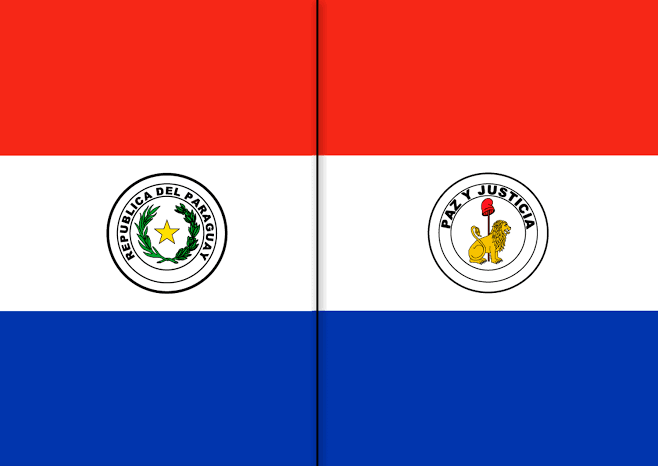

Julia M. Garcia
About me
My name is Julia Garcia. I am from Asuncion, Paraguay. I am currently working as a Mentor servicing BYU-Pathway Worlwide students. I am trying to pursue a Bachelors Degree in Software Development and I hope to finish next year
Asuncion, Paraguay
Paraguay is know as the "heart of America" since is place in the center of South America. Has a tropical weather and is know for being the only country in South America that didn't exterminate but learn their culture. Because of this Paraguay has 2 official languages Spanish and Guarani. Is also the only country in the world that it flags has two different designs on each side
